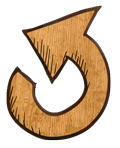

Chaque joueur reçoit huit pièces de la même couleur, deux de chaque forme. Le premier joueur est tiré au sort.
À ton tour, choisis une de tes pièces et pose-la sur une case libre. Une forme adverse interdit de poser la même forme dans sa ligne, sa colonne et sa région de 2 × 2 cases. Tu peux y répéter ta propre forme si aucune pièce adverse ne l’interdit.
Pose la quatrième forme différente d’une ligne, d’une colonne ou d’une région. Toutes les couleurs comptent. Si ton adversaire ne peut plus poser de pièce à son tour, tu gagnes aussi.
Un jeu de Nouri Khalifa · Gigamic, 2019